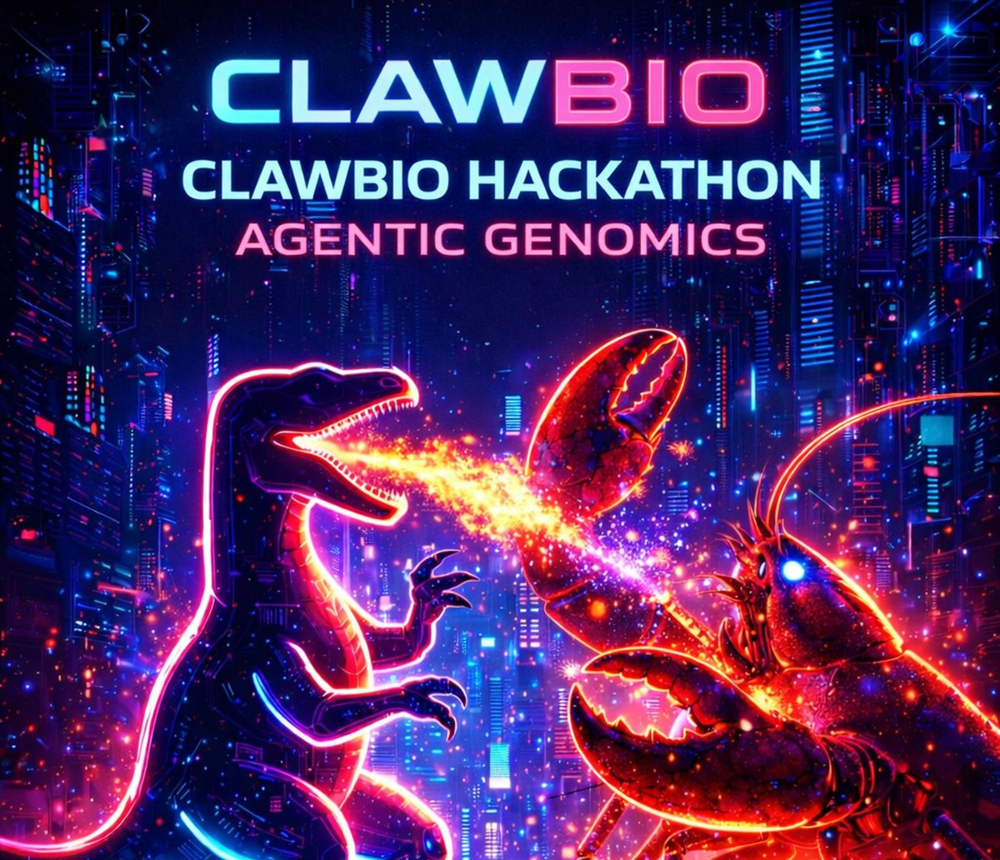
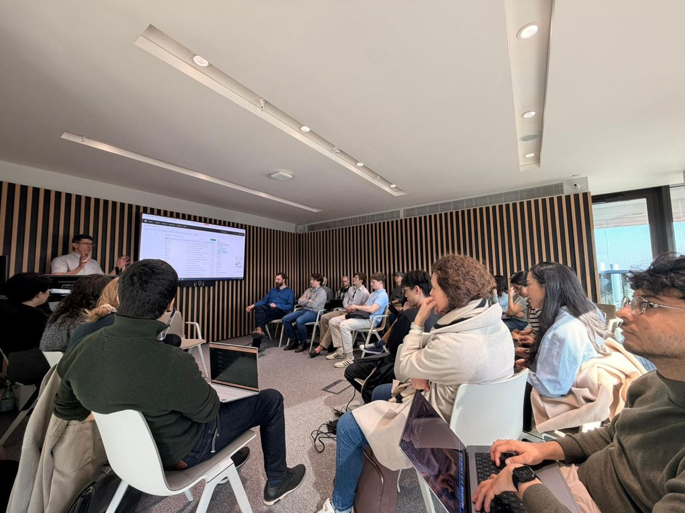
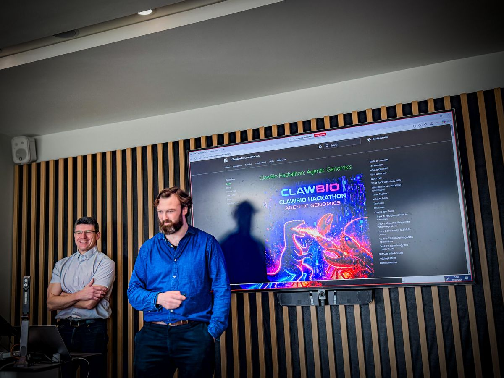
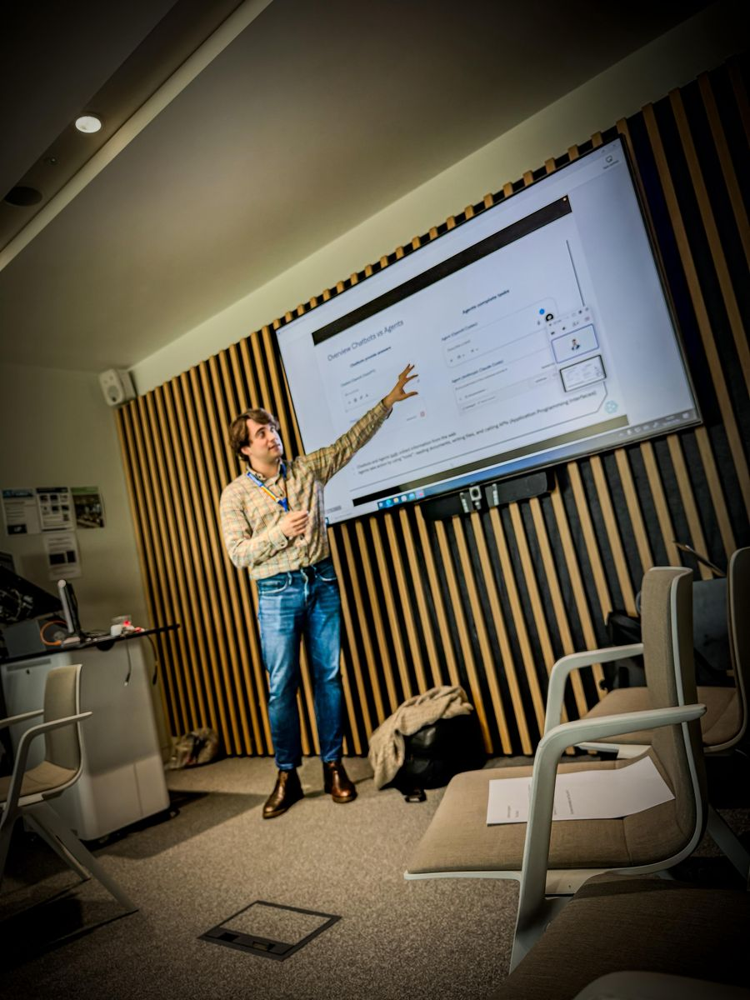
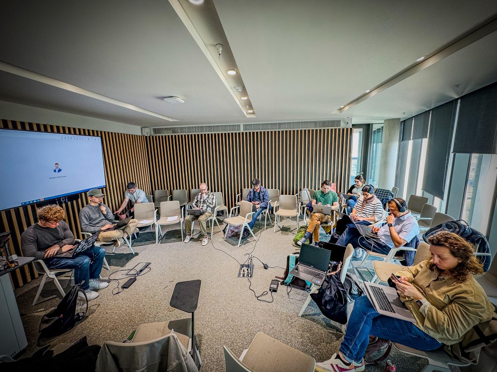
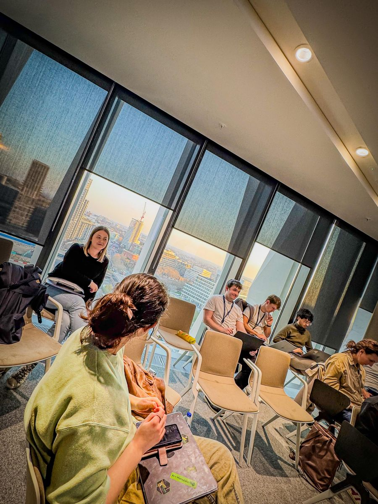
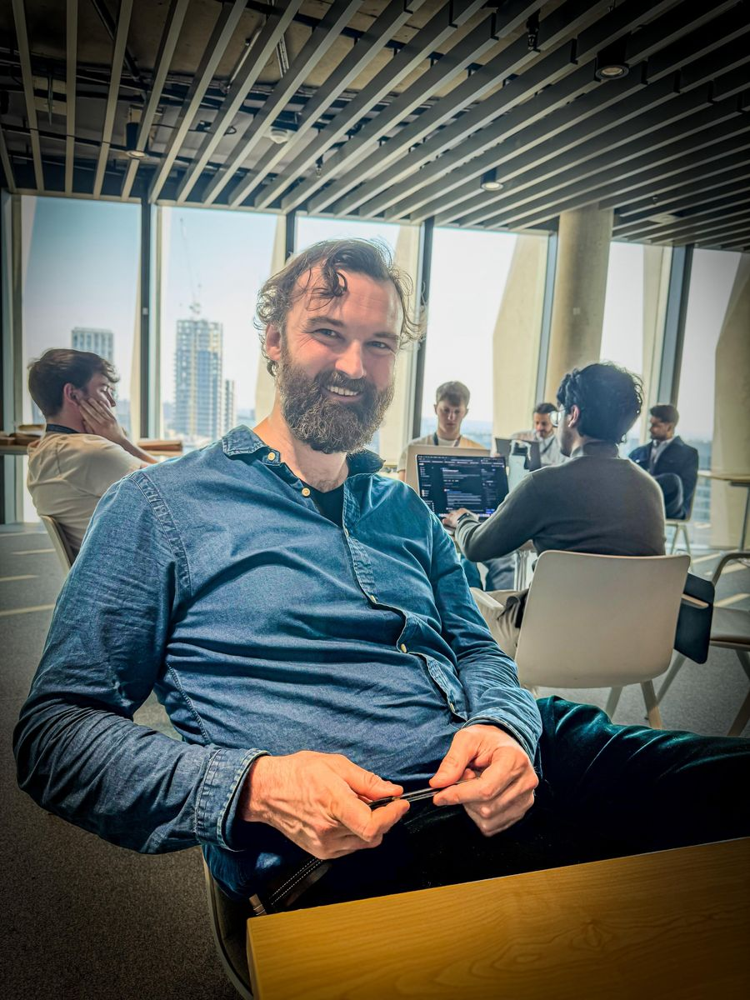
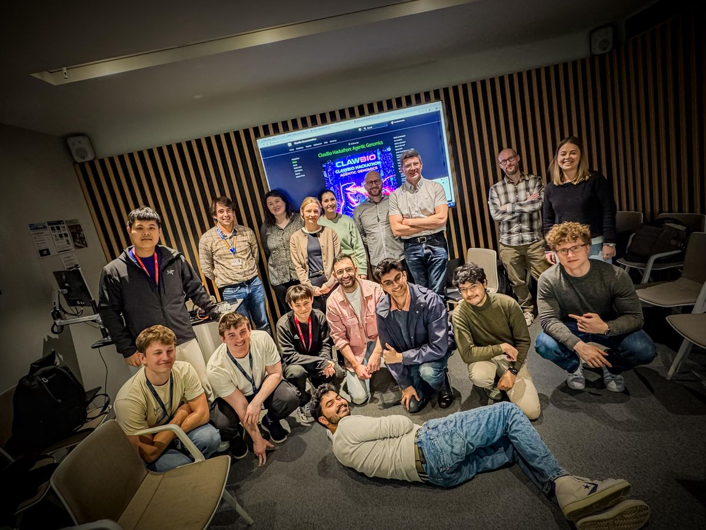

ClawBio Hackathons: Agentic Genomics¶

Hackathon #1: Imperial College London¶
19 March 2026 | Sir Michael Uren Hub, White City Campus
Our first hackathon brought together 70+ participants from across genomics, AI engineering, proteomics, clinical diagnostics, and epidemiology. In a single afternoon, attendees built and submitted 8 new bioinformatics skills as pull requests to ClawBio.
-

Opening session. Full room for the welcome talks at the Sir Michael Uren Hub.
-

Manuel Corpas and Jay Moore introduce ClawBio and the docs.clawbio.ai hackathon guide.
-

Guided tutorial. Walking through agentic tools and skill building, step by step.
-

Build time. Laptops open, skills taking shape across all five tracks.
-

Breakout hacking with sunset views over White City. Discussions on reproducibility, sensitive biodata, and the future of agentic genomics.
-

Jay Moore (Imperial) between mentoring rounds.

Group photo at the end of the day.
By the numbers¶
| Metric | Value |
|---|---|
| Registrants | 99+ |
| Attended | 70+ |
| Skill PRs submitted | 8 |
| GitHub stars (day of event) | 468 |
| Forks | 83 |
| Repo views (14 days) | 10,972 |
| Unique cloners | 645 |
| Tracks | 5 (AI engineers, genomics, proteomics, clinical, epi) |
Skills submitted on the day¶
| Skill | Author | Description |
|---|---|---|
| PubMed Summariser | @emanueleriontino | PubMed research briefing from gene or disease query |
| Protocols.io Bridge | @camlloyd | Search and retrieve lab protocols |
| Skill Builder | @thepigdestroyer | Scaffold new ClawBio skills from spec |
| Variant Annotation | @toby-clark4 | Annotate variants with ClinVar and gnomAD |
| Variant Annotation | @HadiKhan-dev | Alternative variant annotation approach |
| Bioconductor Bridge | @HDash | Doc-enriched Bioconductor package discovery |
| FHIR PGx | @MarceloGal | Fetch electronic clinical pharmacogenomics data |
| Clinical Trial Finder | @Duvet05 | Find clinical trials with multiple output formats |
Institutions represented¶
Imperial College London, King's College London, The Crick Institute, UCL, QMUL, University of Westminster, Brunel University, PUCP Peru, FinalDose.ai, Canos.ai, Vivid-Dx, Flow.bio, FLock.io, Valink Tx, Inforcer
Watch the recording¶
Organised by Jay Moore (Imperial), Manuel Corpas (Westminster), Nathan Skene (Imperial), and Josh Beale.
Join the next one¶
We are planning more hackathons in 2026. To get notified:
- Join Discord
- Follow ClawBio on GitHub (star and watch)
- Check Luma for event announcements
Want to host a ClawBio hackathon at your institution? Open an issue or reach out on Discord.
Hackathon Guide¶
Everything below is the reusable guide for participating in any ClawBio hackathon. It covers setup, skill building, and submission.
The Problem¶
Modern bioinformatics knowledge is fragmented across papers, scripts, and private pipelines. Reproducing even simple analyses often requires reconstructing hidden decisions from incomplete documentation. Only about 1 in 4 computational biology papers can be reproduced without contacting the authors (Garijo et al., PLOS ONE 2013; Collberg and Proebsting, 2016). Meanwhile, general-purpose LLMs hallucinate gene-drug associations, use outdated clinical guidelines, and produce results with no audit trail.
What is ClawBio?¶
ClawBio proposes a different unit of knowledge: a skill that packages the code, the scientific assumptions, the test data, and the execution contract in one inspectable artefact.
Each skill includes:
- A SKILL.md contract that explains the scientific decisions the tool makes (thresholds, databases, safety rules)
- Demo data that anyone can run without their own files
- A Python script with
--input,--output, and--demoflags - A reproducibility bundle:
commands.sh,environment.yml, andchecksums.sha256
SKILL.md is not just documentation. It is the contract that tells humans and AI agents how the skill should be used, what assumptions it makes, and when it should refuse to run.
Who is this for?¶
| You are... | You already know | You do not need to know | Good first project |
|---|---|---|---|
| AI / software engineer | APIs, Python, automation | Any biology or genomics | PubMed Summariser, Clinical Trial Finder |
| Genomics researcher | VCFs, pipelines, domain expertise | Agentic AI or SKILL.md | Variant Annotation, QC Report |
| Proteomics / multi-omics | Mass spec, protein databases | ClawBio (no skills exist yet) | Protein Interaction Mapper, Protein Domain Annotator |
| Clinical / diagnostics | Variant classification, PGx | Agent frameworks | PGx Interaction Checker |
| Epidemiology / public health | Population data, outbreak analysis | Python scripting (helpers available) | Vaccine Equity Scorer, GBD Visualiser |
Quick Path¶
Setup
Clone repo, install dependencies, run a demo.
Your First Skill
Scaffold a skill, write SKILL.md, add demo data.
Add Python
Implement the skill logic with a CLI endpoint.
Test and Submit
Validate, test, open a PR.
Most participants submit their first skill in 90 to 120 minutes. First-time Git or GitHub users should allow extra time; helpers will be available throughout.
Starter template: copy templates/SKILL-TEMPLATE.md into your skill directory to get the correct structure immediately. See Your First Skill for the full walkthrough.
Example completed skill: see the NutriGx Advisor PR by @drdaviddelorenzo, the first community contribution.
What counts as a successful submission?¶
- [ ] One new skill directory under
skills/ - [ ] A
SKILL.mdwith frontmatter (name, version, inputs, outputs) and three body sections (Domain Decisions, Safety Rules, Agent Boundary) - [ ] Synthetic demo data (never real patient data)
- [ ] A runnable
--democommand that produces output - [ ] A pull request to github.com/ClawBio/ClawBio
That is it. A focused, well-documented skill with clear domain decisions is better than an ambitious but incomplete one.
Three Themes¶
- Gaps in genomics tools: What analyses are still manual, brittle, or unreproducible? Build a skill that fills one of those gaps.
- Trustworthy agentic approaches: How do we make AI agents safe for biology? Encode domain decisions and safety rules into SKILL.md so agents execute with proven logic, not hallucinations.
- Accessible complexity: Genomics data is vast and complex. Build skills that present results so clearly that a non-specialist can act on them.
Resources¶
Two guided tutorials are available to get you started. Both paths converge at the same goal: a working skill you can submit as a PR.
Agentic Tools Tutorial
How AI coding agents work, setup options (GitHub Copilot, Claude Code, OpenCode), your first AI-assisted analysis, and context management tips.
ClawBio Setup
Clone ClawBio, run a demo skill, then build your own following the step-by-step guide.
Pre-event setup¶
# Clone the repo and run a demo
git clone https://github.com/ClawBio/ClawBio.git
cd ClawBio
pip3 install -r requirements.txt
python3 skills/pharmgx-reporter/pharmgx_reporter.py --demo
To submit your work you will need the GitHub CLI (gh). Install it if you don't have it:
Then authenticate: gh auth login
If you prefer not to install gh, you can submit your PR through the GitHub web interface instead. Both routes are covered in the Submit guide.
Choose Your Track¶
We have attendees ranging from AI agent engineers with no genomics background to researchers with 40+ years in computational biology. Pick the track that fits you. Each project is labelled as a 90-minute build (achievable in the afternoon) or a stretch build (ambitious, likely a prototype).
Track A: AI Engineers New to Genomics¶
You build agents, automation, and APIs professionally. You just haven't touched genomic data before. These skills let you apply your engineering strengths to biology using public APIs, no wet-lab knowledge required.
90-minute builds:
- PubMed Research Summariser
- Clinical Trial Finder
- Variant Frequency Dashboard
- Protein Domain Annotator
Stretch builds:
Track B: Genomics Researchers New to Agentic AI¶
You work with genomic data daily. Wrap your existing expertise into a skill.
90-minute builds:
Stretch builds:
Track C: Proteomics and Multi-Omics¶
ClawBio currently has zero proteomics skills. Build the first one.
90-minute builds:
Stretch builds:
Track D: Clinical and Diagnostic Applications¶
All clinical track outputs are educational prototypes only. They must not be used for clinical decision-making or patient management.
90-minute builds:
Stretch builds:
Track E: Epidemiology and Public Health¶
90-minute builds:
Stretch builds:
Judging Criteria¶
| Criterion | Weight |
|---|---|
| Domain correctness | 40% |
| Reproducibility | 25% |
| Usefulness | 20% |
| Code quality | 15% |
Communication¶
- Primary channel: Discord for technical help, PR reviews, and community
- GitHub: ClawBio/ClawBio Discussions for skill proposals and longer-form questions